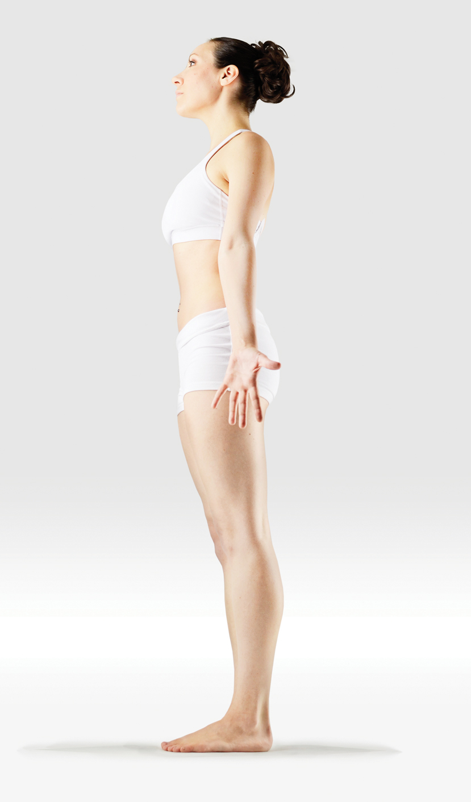
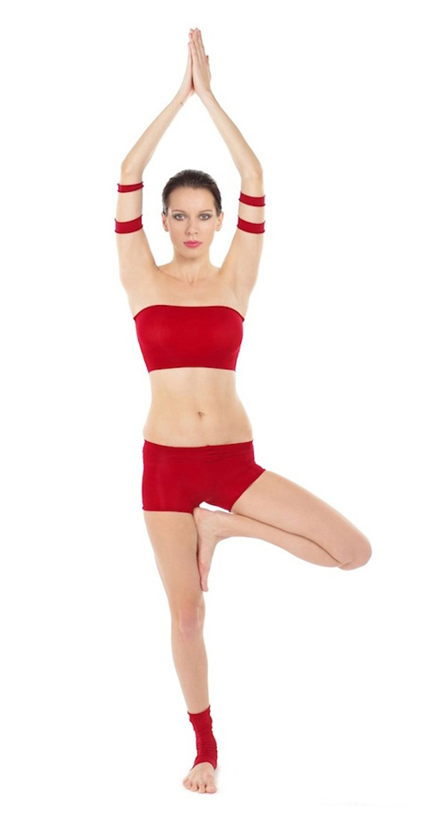
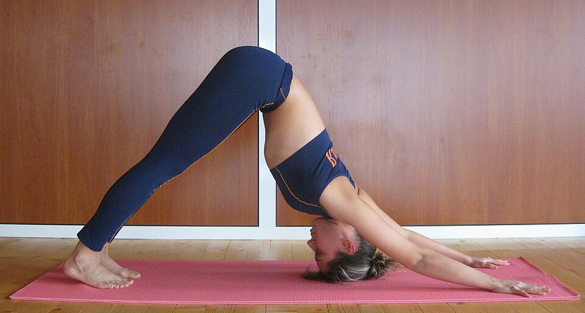
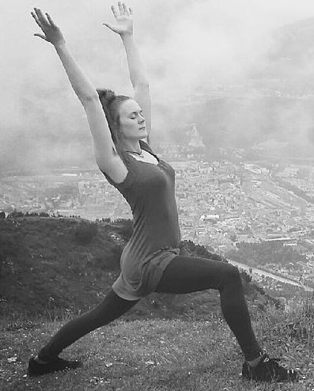
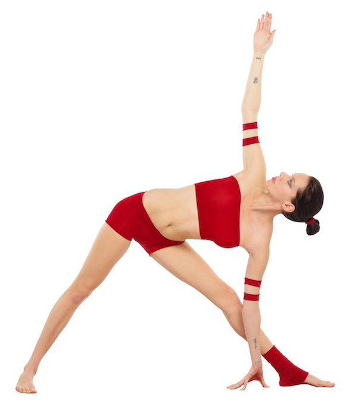
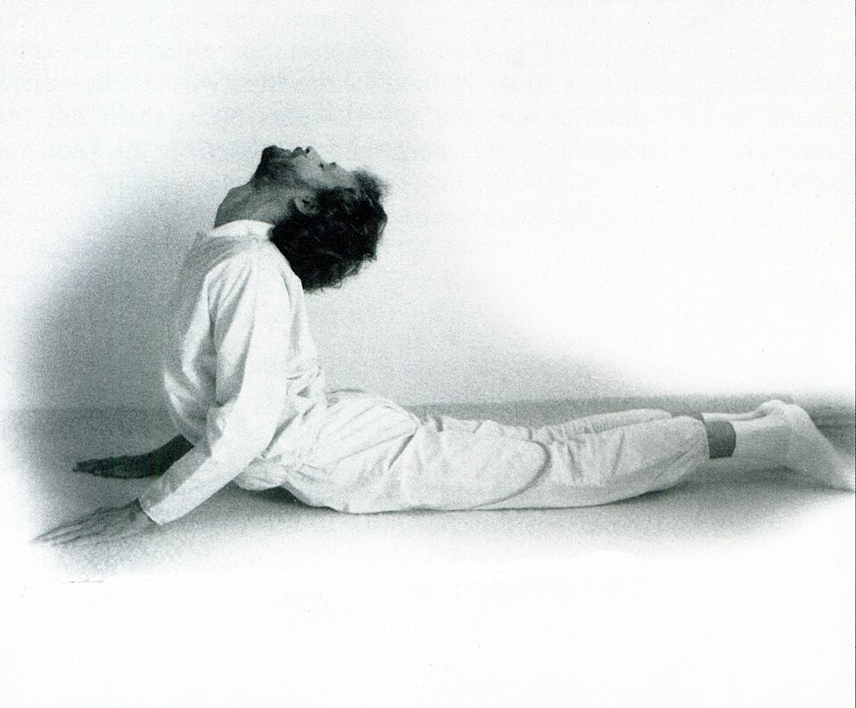
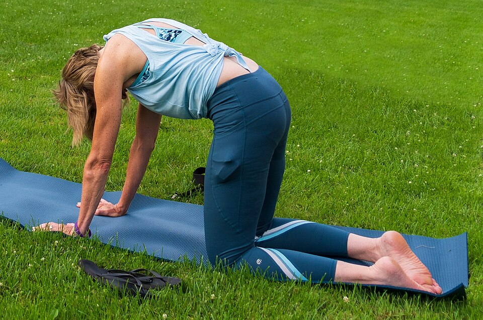
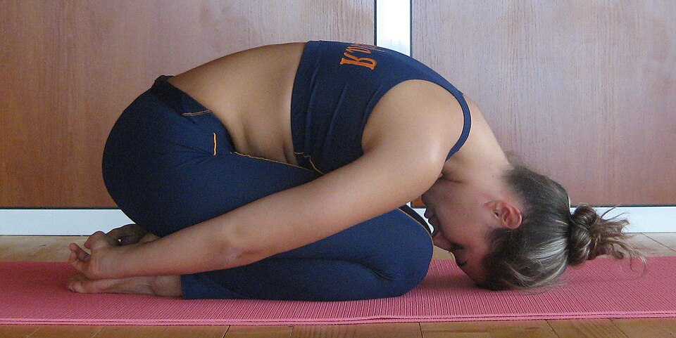
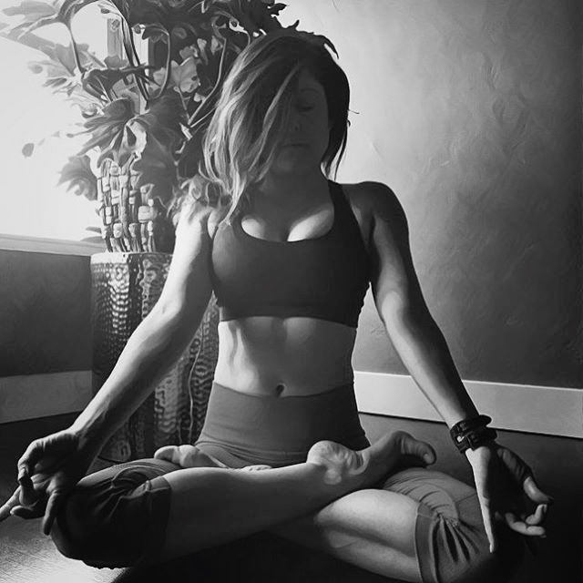
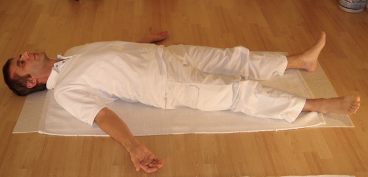

10 fundamentalnych asan ze zdjęciami — technika, korzyści i wskazówki
Aktualizacja: 2026-06
Asana to pozycja ciała utrzymywana ze świadomym oddechem. Poniżej dziesięć fundamentów, na których opiera się większość praktyki. Wchodź w nie powoli, oddychaj swobodnie i wychodź z kontrolą.

Pozycja Góry — baza wszystkich pozycji stojących

Drzewo — równowaga i koncentracja

Pies z głową w dół — wzmacnia i rozciąga całe ciało

Wojownik I — siła nóg, otwarcie klatki

Trójkąt — rozciąga boki tułowia i nogi

Kobra — mobilizacja kręgosłupa (wygięcie w tył)

Bitilasana/Marjariasana — rozgrzewka kręgosłupa

Dziecko — pozycja odpoczynku i wyciszenia

Lotos — siad medytacyjny (wymaga elastyczności bioder)

Trup — końcowa relaksacja, integracja praktyki
| Asana | Technika w skrócie | Korzyści |
|---|---|---|
| Tadasana (Góra) | Stopy razem, ciężar równo, korona głowy w górę, ramiona rozluźnione. | Postawa, świadomość ciała, baza dla innych pozycji. |
| Vrksasana (Drzewo) | Stopa na łydce lub udzie (nie na kolanie!), dłonie przed klatką lub w górze, wzrok w punkt. | Równowaga, koncentracja, siła nóg. |
| Virabhadrasana I (Wojownik I) | Wykrok, przednie kolano nad kostką, biodra do przodu, ręce w górę. | Siła nóg, otwarcie klatki i bioder. |
| Trikonasana (Trójkąt) | Nogi szeroko, jedna ręka w dół do goleni/podłogi, druga w górę, klatka otwarta. | Rozciąga boki, nogi i kręgosłup. |
| Asana | Technika w skrócie | Korzyści |
|---|---|---|
| Adho Mukha Svanasana (Pies w dół) | Dłonie i stopy na macie, biodra w górę („litera V do góry nogami"), plecy proste. | Wzmacnia ramiona, rozciąga uda i łydki, wycisza. |
| Bitilasana / Marjariasana (Krowa–Kot) | Na czworakach: wdech — wygięcie w dół (krowa), wydech — zaokrąglenie pleców (kot). | Mobilizuje kręgosłup, rozgrzewa do praktyki. |
| Bhujangasana (Kobra) | Leżenie na brzuchu, dłonie pod barkami, delikatne uniesienie klatki, łokcie blisko ciała. | Wzmacnia plecy, otwiera klatkę, mobilizuje kręgosłup. |
| Asana | Technika w skrócie | Korzyści |
|---|---|---|
| Balasana (Dziecko) | Siad na piętach, tułów na udach, czoło na macie, ręce wzdłuż ciała lub w przód. | Odpoczynek, rozluźnienie pleców i bioder, wyciszenie. |
| Padmasana (Lotos) | Siad skrzyżny ze stopami na udach. Trudny — zacznij od Sukhasany (zwykły siad skrzyżny). | Stabilny siad do oddechu i medytacji. |
| Shavasana (Trup) | Leżenie na plecach, ręce i nogi rozluźnione, oczy zamknięte, spokojny oddech. | Integracja praktyki, głęboki relaks układu nerwowego. |